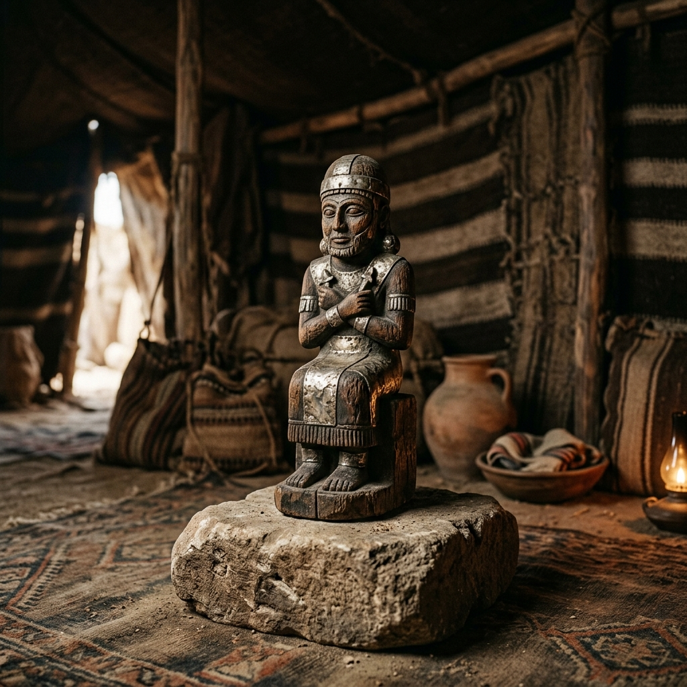
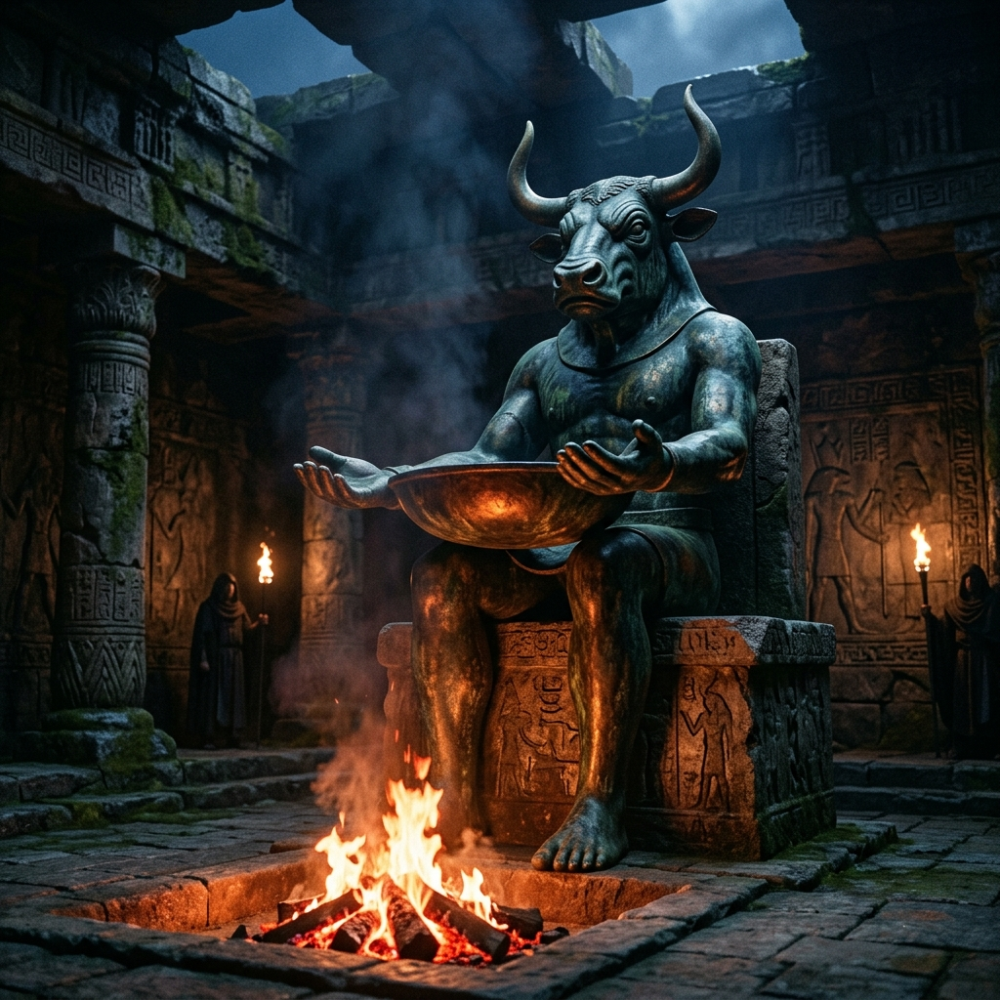
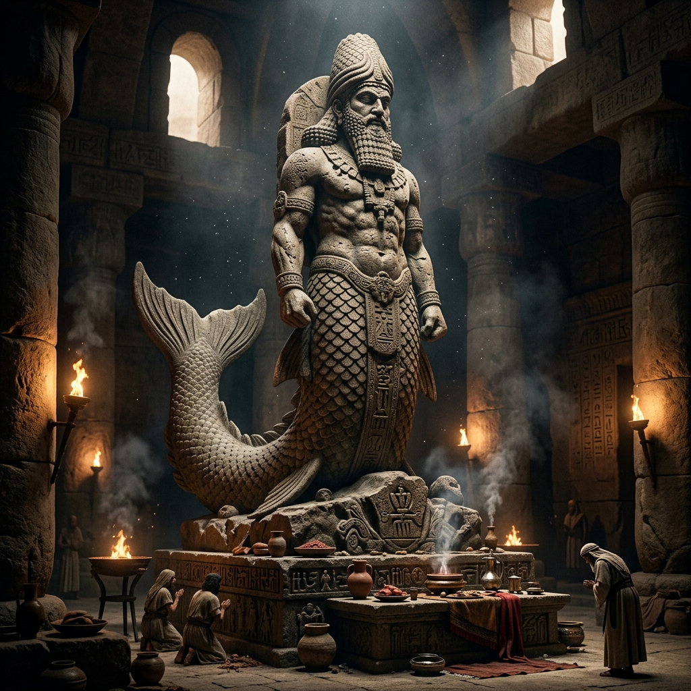
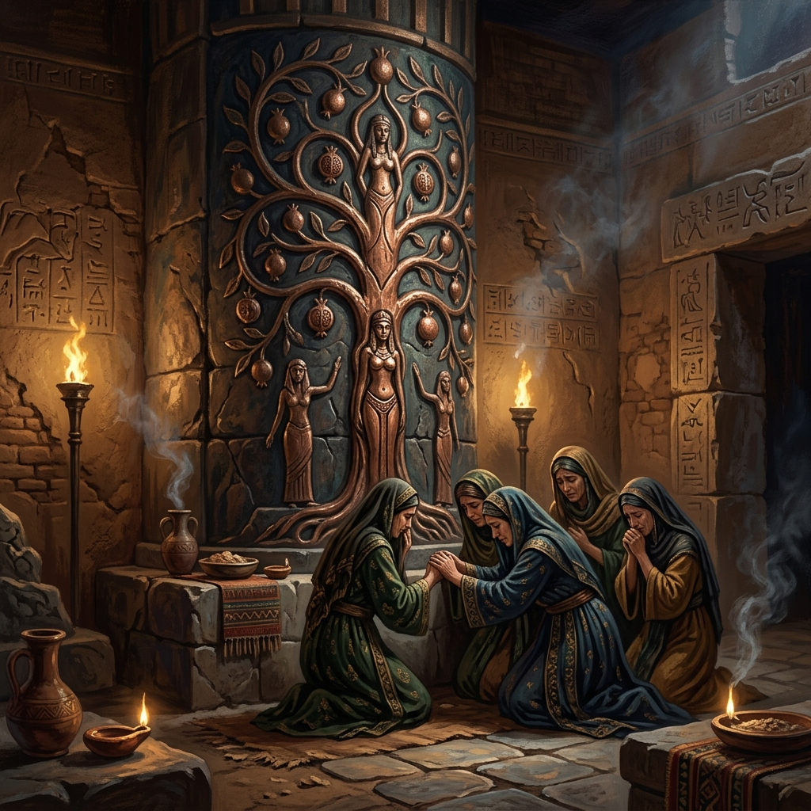
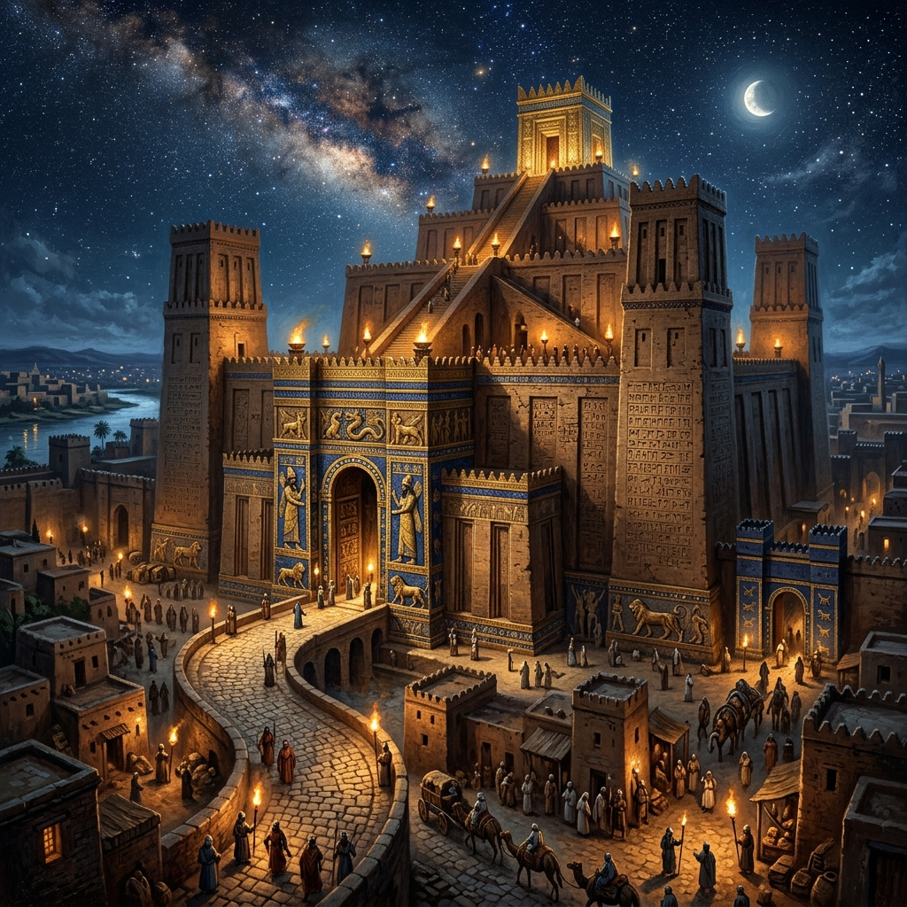
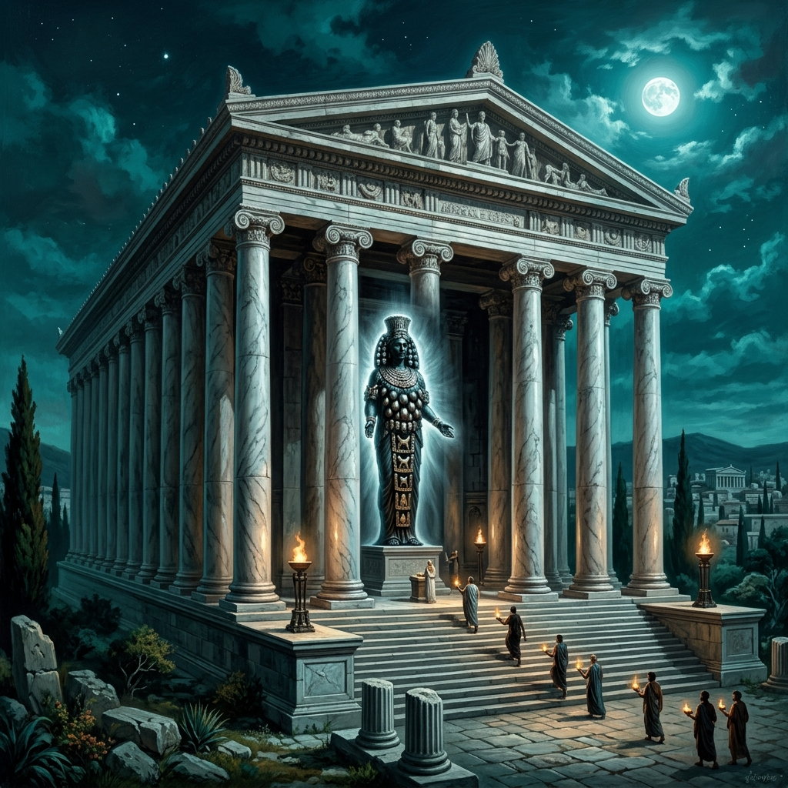
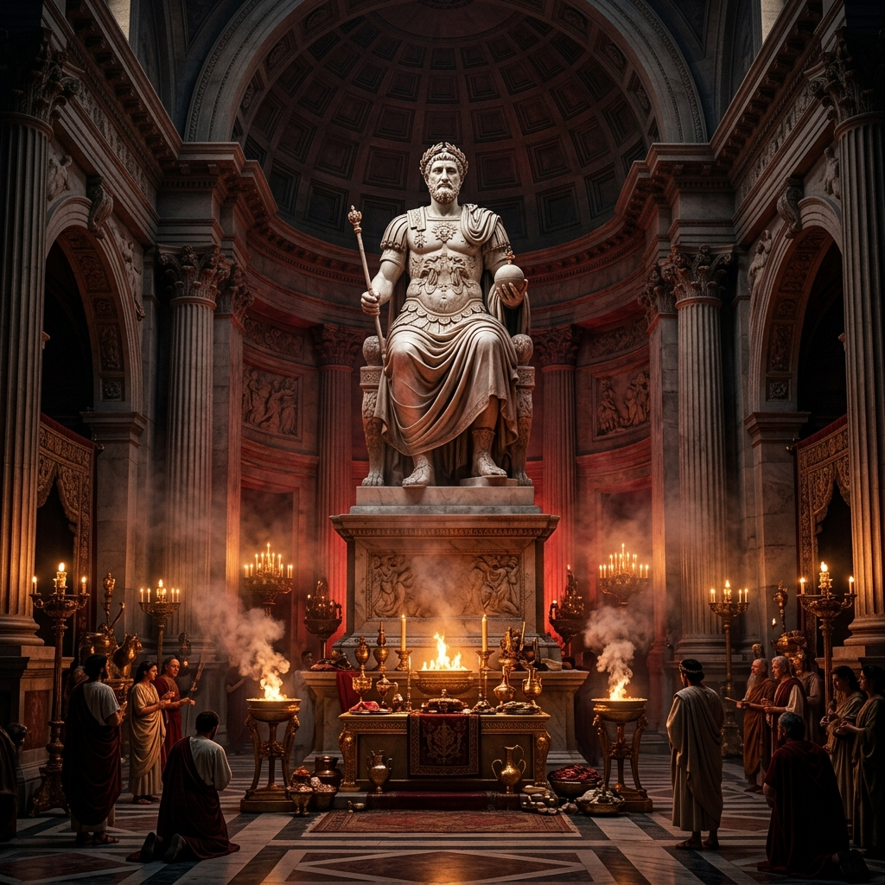

1. 시대적, 지리적 배경
창세기의 주요 배경은 고대 근동의 청동기 시대, 특히 기원전 2000년대 초반의 족장 시대입니다. 아브라함의 고향인 갈대아 우르(Ur)와 중간 기착지인 하란(Haran)은 고대 메소포타미아 문명의 중심지였으며, 다신교 숭배가 매우 발달한 지역이었습니다. 특히 달의 신(Sin)을 숭배하는 문화가 지배적이었습니다. 이러한 배경 속에서 여호와 하나님은 아브라함을 다신교적 환경에서 분리하여 가나안 땅으로 부르셨습니다.
2. 등장하는 주요 이방신: 드라빔 (Teraphim)
창세기에 명시적으로 이름을 드러내는 우상/이방신은 '드라빔(Teraphim)'입니다. 드라빔은 고대 근동에서 널리 숭배되던 가정 수호신의 일종으로, 주로 나무나 은, 금 등으로 작게 조각된 우상입니다.
"그 때에 라반이 양 털을 깎으러 갔으므로 라헬은 그의 아버지의 드라빔을 도둑질하고" (창세기 31:19)
4. 역사 및 고고학적 교차 검증 (Nuzi Tablets)
기원전 15세기경의 누지 문서(Nuzi Tablets)에 따르면, 고대 메소포타미아 지역에서 드라빔을 소유한다는 것은 단순한 종교적 조각 소장을 넘어 '가문의 영적 계승권 및 가주의 상속권'을 상징하는 법적 효력을 가졌습니다. 라헬의 행동은 친정 가문에서의 경제적 권익 보장과 직결된 행위였습니다.
5. 신학적 및 구속사적 의미
이방 신상들을 버리고 자신을 정결하게 하라(창 35:2). 세속의 다신교적 보호망을 땅에 묻고, 오직 언약의 하나님만을 유일한 피난처로 삼는 이스라엘의 신앙적 순결이 어떻게 회복되어 가는지를 보여줍니다.

1. 시대적, 지리적 배경
기원전 15~13세기 경의 출애굽 사건과 40년간의 광야 생활입니다. 이집트의 종교는 나일강, 태양, 동물 등을 신격화한 거대한 국가 지배 이데올로기였습니다. 광야에 진입한 이스라엘은 가나안 변방 족속들이 섬기던 파괴적이고 음란한 이방 신앙(몰렉, 그모스, 바알브올)의 유혹에 직면합니다.
2. 등장하는 주요 이방신
- 이집트의 신들: 라(Ra, 태양신), 오시리스(생명과 명계의 신), 헤카트(개구리 머리 모양의 풍요의 여신) 등.
- 몰렉 (Molech): 암몬과 가나안 일대의 인신 제사(아동 희생) 신.
- 그모스 (Chemosh): 모압 족속의 국가신.
- 바알브올 (Baal-peor): 성적인 제의와 연관된 모압 평지의 바알.
"내가 그 밤에 애굽 땅에 두루 다니며... 애굽의 모든 신에게 벌을 내리리라 나는 여호와라" (출애굽기 12:12)
4. 역사 및 고고학적 교차 검증
일부 학자들은 몰렉이 특정한 신의 이름이 아니라 '희생 제사(Molk)' 자체를 가리키는 용어라고 주장합니다. 카르타고의 '토펫(Tophet)' 유적에서는 불에 탄 어린아이들의 유골이 다수 발굴되어 가나안 권역의 아동 희생을 입증합니다.
5. 신학적 및 구속사적 의미
출애굽 사건은 제국이 구축한 다신교 세계관을 파쇄하는 우주적 해방 사건이었습니다. 하나님이 우상 숭배를 가증히 여기신 이유는, 그것이 생명을 파괴하고 인간의 존엄을 짓밟는 세속 지배 체계였기 때문입니다.

1. 시대적, 지리적 배경
가나안 땅 정착 이후 왕정 초기까지의 시대입니다. 유목민이었던 이스라엘은 가나안에 들어와 농경 사회로 체제 전환을 겪게 되면서, 성공적인 농사를 위해 가나안 원주민들의 토착 신인 '바알'에게 비를 빌어야 한다는 강한 종교적, 실용주의적 압력에 직면합니다.
2. 등장하는 주요 이방신
- 바알 (Baal): 비, 폭풍, 농사의 풍요를 주관하는 신 ('주인', '남편').
- 아스다롯 (Ashtaroth): 전쟁과 성적 풍요의 여신. 바알의 배우자.
- 다곤 (Dagon): 블레셋(Philistines)의 수호신이자 농경/곡물의 신.
"블레셋 사람들이 하나님의 궤를 가져다가 다곤의 신전에 들어가서 다곤 곁에 두었더니... 다곤이 여호와의 궤 앞에서 엎드러져 그 얼굴이 땅에 닿았는지라" (사무엘상 5:2-3)
4. 역사 및 고고학적 교차 검증
우가릿 문서: 1929년 시리아 라스 샴라에서 발견된 이 문서들은 바알 신앙의 상세한 실체(바알 사이클)를 적나라하게 폭로합니다. 가나안 사람들은 비와 농사의 생명력을 깨우기 위해 종교적 음란 제의를 행했습니다.
다곤: 과거에는 인어 형태의 물고기 신으로 오해받았으나 현대 설형문자 해독 연구에 따르면 원래 대중적인 농경과 곡물의 신(Dagan)이었습니다.
5. 신학적 및 구속사적 의미
이스라엘의 비극은 생존(풍요)과 쾌락을 핑계로 실용주의적 종교를 수용한 데서 비롯되었습니다. 그러나 다곤 신전 사건은 인간의 군사적 패배 속에서도 하나님 자신은 결코 패배하지 않으시는 역사와 우주의 완전한 주권자이심을 증명합니다.

1. 시대적, 지리적 배경
기원전 930년부터 예루살렘이 함락되는 586년까지의 시기입니다. 앗수르와 바벨론 제국이 서진하며 군사적 압박을 가해오는 혼란 속에서 남유다와 북이스라엘 내부의 혼합주의 종교 숭배가 극에 달했습니다. 왕실과 성전 내부까지 이방의 신상들이 버젓이 침투하였습니다.
2. 등장하는 주요 이방신
- 아세라 (Asherah): 가나안 모신으로 산당 숭배의 핵심 상징물이자 야훼 신앙과 혼합 숭배됨.
- 담무스 (Tammuz): 수메르-아카드의 '두무지'에서 유래한 식생과 목축의 신.
- 하늘의 여왕 (Queen of Heaven): 메소포타미아 이슈타르 혹은 아스타르테 계열의 광역 여신.
- 니스록 (Nisroch): 앗수르 왕 산헤립이 살해될 때 경배하고 있던 앗수르 왕실 수호신.
"그가 또 나를 데리고 여호와의 전으로 들어가는 북문에 이르시기로 보니 거기에 여인들이 앉아 담무스를 위하여 애곡하더라" (에스겔 8:14)
4. 역사 및 고고학적 교차 검증
기원전 9세기 후반의 '쿤틸렛 아즈루드 비문(Kuntillet Ajrud)'에서 "사마리아의 야훼와 그의 아세라"라는 충격적인 명문이 발견되었습니다. 이는 당시 이스라엘 민중 종교가 유일신 신앙에서 벗어나 야훼의 배우자로 아세라 여신을 숭배했을 만큼 극도로 타락한 혼합주의를 겪었음을 여실히 고발합니다. 담무스 숭배 역시 고대 바벨론의 식생 순환 제의와 정확히 평행합니다.
5. 신학적 및 구속사적 의미
거룩해야 할 성전 중심부마저 제국주의 종교와 실용주의 다신교의 혼합 제의로 뒤덮인 모습은 유다 왕국의 영적 멸망을 상징합니다. 선지자들은 이러한 혼합주의를 신앙의 간음으로 선언하며 종교 개혁을 거듭 외쳤습니다.

1. 시대적, 지리적 배경
기원전 6세기 예루살렘 멸망 이후 유다 백성들이 바벨론 제국의 심장부로 끌려가 생활하던 포로기와 이후 페르시아 제국 발흥기입니다. 바벨론은 거대한 신전, 지구라트, 현란한 국가 대제전을 갖춘 다신교 제국이었으며 이스라엘은 영적 압박감을 느끼게 되었습니다.
2. 등장하는 주요 이방신
- 벨 (Bel): 바벨론 최고 수호신이자 국가신인 '마르둑(Marduk)'의 경칭.
- 느보 (Nebo): 지혜, 문예, 서기의 신이자 마르둑의 아들인 '나부(Nabu)'.
"벨은 엎드러졌고 느보는 구부러졌도다 그들의 우상들은 짐승과 가축에게 실렸으니 너희가 떠메고 다니던 그것들이 피곤한 짐승의 무거운 짐이 되었도다" (이사야 46:1)
4. 역사 및 고고학적 교차 검증
바벨론 설형문자 토판과 비문들은 최고신 마르둑(벨)과 그의 신전 에사길라(Esagila), 그리고 지혜의 신 나부(느보)의 존재를 강력하게 매칭해 줍니다. 또한 당대 바벨론 지배층의 이름(예: 느부갓네살(Nabu-kudurri-usur), 벨사살(Bel-sar-usur))에 이 신들의 이름이 직접 포함된 인명 결합어 형태가 풍부히 고증되어 역사성을 입증합니다.
5. 신학적 및 구속사적 의미
제국의 거대 문명과 찬란한 종교의 겉모습에 짓눌린 포로기의 백성들에게 선지자는 단언합니다. 제국의 위대한 주신들로 통하던 벨과 느보는 결국 심판 아래 쓰러질 수밖에 없으며 가축의 등에 업힌 '무거운 짐'에 불과하고, 이스라엘의 보이지 않는 하나님만이 역사를 주관하고 백성을 업어 살리시는 참 신이심을 선포합니다.

1. 시대적, 지리적 배경
예수 그리스도 시대부터 기원후 1세기 사도 바울의 전도 여행기까지입니다. 로마 제국의 평화(Pax Romana) 아래서 헬레니즘 철학과 그리스-로마 다신교 문화가 지중해 전역의 도시 국가들을 지배했습니다. 기독교 복음은 이 다문화·다신교적인 도시 한복판으로 뚫고 들어갔습니다.
2. 등장하는 주요 이방신 및 종교 현상
- 에베소의 아르테미스 (Artemis): 소아시아의 풍요와 도시 상권을 지배하던 대표 여신.
- 제우스와 헤르메스 (Zeus & Hermes): 루스드라에서 기적을 행한 바나바와 바울을 신격화하여 호칭함.
- 알지 못하는 신 (Unknown God): 아테네 아레오바고에서 사도 바울이 복음 전파의 접점으로 활용한 미지의 존재를 위한 제단.
- 디오스쿠로이 (Dioscuri): 제우스의 쌍둥이 아들로서 항해의 수호자. 바울의 배 머리 장식에 쓰임.
"크다 에베소 사람의 아르테미스여 하니 온 시내가 요란하여... 연극장으로 달려 들어가는지라" (사도행전 19:28-29)
4. 역사 및 고고학적 교차 검증
에베소 고고학 발굴을 통해 고대 세계 7대 불가사의 중 하나였던 아르테미스 대신전의 거대한 규모와 다유방을 가진 아르테미스 신상의 실체가 완전히 규명되었습니다. 특히 에베소 전역에서 아르테미스 숭배와 관련된 은제 신전 모형 제작 길드 비문이 다수 발굴되어 사도행전 19장의 은장색 데메드리오 소동 사건이 당대 도시 상업권 구조와 완전히 일치하는 역사적 팩트임이 밝혀졌습니다.
5. 신학적 및 구속사적 의미
복음은 단순한 개인의 내면 수양이 아니라, 도시의 우상 숭배 체제 및 그와 얽힌 경제적 부패망과 직접 격돌하는 영적 세력이었습니다. 인간이 손으로 만든 우상은 아무것도 아님을 드러내며, 세상 학문과 미신을 넘어선 부활하신 예수를 만유의 주로 선포했습니다.

1. 시대적, 지리적 배경
기원후 1세기 후반, 특히 도미티아누스 황제 시기입니다. 로마 제국은 소아시아(터키 서부) 지역을 중심으로 자신들의 정치적 주권과 동맹을 공고히 하기 위해 로마 황제 숭배(Imperial Cult)를 대대적으로 강조하였습니다. 이는 제국 내 시민이자 상인이 되기 위한 필수 통과의례였습니다.
2. 등장하는 주요 이방 숭배
- 로마 황제 숭배 (Imperial Cult): 살아있는 황제를 주와 신(Dominus et Deus)으로 부르며 향을 피우는 종교적 충성 의례.
- 사탄의 권좌 (Seat of Satan): 버가모 교회 편지(계 2:13)에 언급된 곳으로, 버가모의 거대한 제우스 제단 혹은 황제 숭배 최초의 주 성전을 상징함.
"네가 어디에 사는지를 내가 아노니 거기는 사탄의 권좌가 있는 데라... 내 충성된 증인 안디바가 너희 가운데 곧 사탄이 사는 곳에서 죽임을 당할 때에도 나를 믿는 믿음을 저버리지 아니하였도다" (요한계시록 2:13)
4. 역사 및 고고학적 교차 검증
소아시아의 거점 도시들(버가모, 에베소, 서머나)은 로마 황제 숭배의 명예적 수호 도시인 '네오코로스(Neokoros)' 타이틀을 쟁취하기 위해 앞다투어 황제 신전을 건립했습니다. 고고학 발굴을 통해 드러난 대형 황제 신전 비문들과 로마 황제를 신격화한 신전 주화들이 요한계시록에 묘사된 짐승 숭배 및 경제적 제재(매매 금지)의 긴박한 직접적 정황을 확고하게 증명해 줍니다.
5. 신학적 및 구속사적 의미
요한계시록의 묵시는 세속의 절대 제국과 종교적 결탁(황제 숭배)에 굴하지 않고 오직 주 예수만을 따르는 성도들에게 승리의 보장을 제공합니다. 제국이 아무리 위협하고 경제적으로 핍박할지라도 만왕의 왕, 만주의 주는 어린 양 예수 한 분뿐이심을 역사적 결말로 선포합니다.

가나안의 폭풍, 비, 풍요를 주관하는 핵심 남신입니다. 농경 사회에 들어선 이스라엘 백성들을 유혹하여 실용주의적 풍요 신앙으로 타락시킨 핵심 우상입니다.
가나안의 최고 모신(Mother Goddess)이자 엘(El)의 배우자입니다. 나무 조각상이나 수목의 형태로 성경에 자주 등장하며, 이스라엘 내에서 야훼 신앙과 가장 빈번히 혼합 숭배되었습니다.
시돈과 페니키아의 풍요, 사랑, 전쟁의 여신입니다. 앗수르-바벨론의 이슈타르에 대응하며, 성경에서는 이스라엘을 음란한 성적 제의로 타락시켰던 대표 우상 여신으로 묘사됩니다.
모압 족속의 민족 수호신입니다. 성경은 모압을 '그모스의 백성'이라 지칭합니다. 영토 정복과 전쟁의 승리를 모압 왕에게 지시하는 등 모압의 국가신 역할을 수행했습니다.
수메르-아카드 신화의 식생 및 농경의 주신 '두무지'에 기원을 둔 신입니다. 그의 죽음과 겨울철 식물의 소멸을 애곡하고 봄날의 부활을 기대하는 제의가 유다 말기 성전 문까지 침투했습니다.
각각 바벨론 최고 국가신 마르둑(Marduk)의 별칭인 벨과, 지혜 및 학문의 신 나부(Nabu)에 직접 대응됩니다. 포로기 선지자 서사에서 제국 멸망의 상징으로 등장합니다.
본래 수렵과 정결의 여신이나 에베소에서는 다유방을 지닌 풍요의 대지모신 형태로 융합 숭배되었습니다. 에베소 상권을 장악한 강력한 상업주의적 이데올로기와 깊이 결탁되어 있었습니다.
그리스 신화 제우스의 쌍둥이 아들(카스토르와 폴룩스)입니다. 고대 항해사들의 수호신이었으며, 사도 바울이 멜리데(몰타)에서 로마로 압송될 때 승선했던 알렉산드리아 배의 선수상이었습니다.
살아있는 로마 황제를 주와 신으로 모시는 정치적이고 종교적인 결탁 체제입니다. 요한계시록의 주요 핍박 정황인 짐승의 표와 숭배 강요의 핵심 역사적 배경입니다.
시리아권에 널리 퍼져 있던 대중적인 곡물과 풍요의 신(Dagan)에 기원을 둡니다. 성경에서는 블레셋인들이 수용한 핵심 국가신으로 나타나나, 고고학적으로 독점 수호신 지위였는지는 논쟁적입니다.
암몬 족속의 국가 수호신입니다. 솔로몬 왕의 말년 혼합 종교 개방 정책으로 예루살렘 동쪽 산에 신당이 지어졌습니다. 몰렉과의 음운/역사적 관계는 아직 완전한 학계 합의가 없습니다.
다메섹을 중심으로 시리아군 지휘관 나아만이 섬기던 폭풍의 신입니다. 본래 근동 전역의 위력적인 폭풍신인 하닷(Hadad)의 지역적 별칭 혹은 속성명으로 해석됩니다.
자녀를 불 가운데로 지나게 하는 인신 제사를 요구한 가증한 신입니다. 그러나 현대 고고학계 일각에서는 고유의 신 이름이 아니라 페니키아-카르타고권의 '인신 제사 의례 명칭(molk)'일 가능성이 제기됩니다.
유다 왕국 말기 여인들이 과자를 만들어 제의를 드리던 천상 여신입니다. 메소포타미아의 여신 이슈타르 혹은 페니키아의 아스다롯을 가리키는 복합적이고 광역적인 여신 칭호로 추정됩니다.
앗수르의 왕 산헤립이 살해될 때 엎드려 경배하던 니네베 신전의 신입니다. 그러나 성경 밖 앗수르 문헌에 이 발음의 신은 없으며, 아시리아 폭풍/전쟁의 신 니누르타(Ninurta)의 오기일 가능성이 유력합니다.
우가릿 토판 문서 (Ras Shamra Tablets)
대략 BC 14 ~ 12세기1929년 프랑스 발굴단에 의해 빛을 본 대규모 쐐기문자 점토판 무리입니다. 성경 밖에서 가나안의 신화 체계와 제사 방식(바알 사이클 등)을 가장 직접적으로 고증해 주는 역사적 보고입니다. 성경에 나오는 가나안 제의의 타락성과 성격, 그리고 야훼 신앙과 격돌한 종교 체계의 배경을 이해하는 절대적인 자료입니다.
메사 왕의 석비 (Mesha Stele)
대략 BC 840년경 제작모압 왕 메사가 오므리 왕조 이스라엘의 오랜 압제로부터 벗어나 영토를 회복한 일을 기념하여 검은 현무암에 모압 문자로 기록해 놓은 승전비입니다. 모압의 국가신인 그모스(Chemosh)의 이름이 생생히 명시되어 있어, 열왕기하 3장의 모압-이스라엘 전쟁 배경을 성경 밖 역사와 고고학으로 완벽하게 교차 증명해 주는 대표적 일차 사료입니다.
쿤틸렛 아즈루드 비문 (Kuntillet Ajrud)
기원전 9세기 후반 ~ 8세기 초반여행자의 임시 거처 혹은 고대 요새지로 추정되는 지역의 거대한 점토 항아리 표면에서 발굴된 히브리어 낙서성 축원문입니다. 여기에 "사마리아의 야훼와 그의 아세라(Yahweh of Samaria and his Asherah)의 이름으로 축복한다"는 구절이 선명히 발견되어, 성경 선지자들이 극도로 경계했던 이스라엘 내부의 혼합주의 종교의 충격적 실체를 역사적으로 증명해 주었습니다.
에베소 아르테미스 명문 & 은장색 길드 비문
BC 6세기 ~ AD 2세기 누적고대 세계 7대 불가사의 중 하나인 에베소 아르테미스 대신전 유적과 인근 대형 연극장에서 발굴된 축제 공문과 기여금 영수 비문들입니다. 사도행전 19장에서 사도 바울이 복음을 전파하자 여신상의 모형을 만들어 팔던 은장색 데메드리오와 동업자들이 길드 소요 사태를 일으킨 사건이 당대 에베소 시의 실제 경제적·종교적 기득권망의 진실한 반영이었음을 역사적으로 입증합니다.
소아시아 황제 신전 비문 & 제국 동전
AD 1세기 ~ 2세기 전성로마 황제를 살아있는 수호신으로 추대하며 신전 건립 권한을 입증해 준 명문 비각과, 황제를 신격화하여 향을 피우게 하던 제의용 화로 점토판 등입니다. 황제의 얼굴이 찍힌 로마 동전 숭배의 직접적 실태는 요한계시록의 ‘짐승의 우상에게 절하는 행위’ 및 성도들이 당대 사회 경제권에서 배제되었던 박해의 뼈아픈 실상을 보여주는 최고의 고고학 증거입니다.